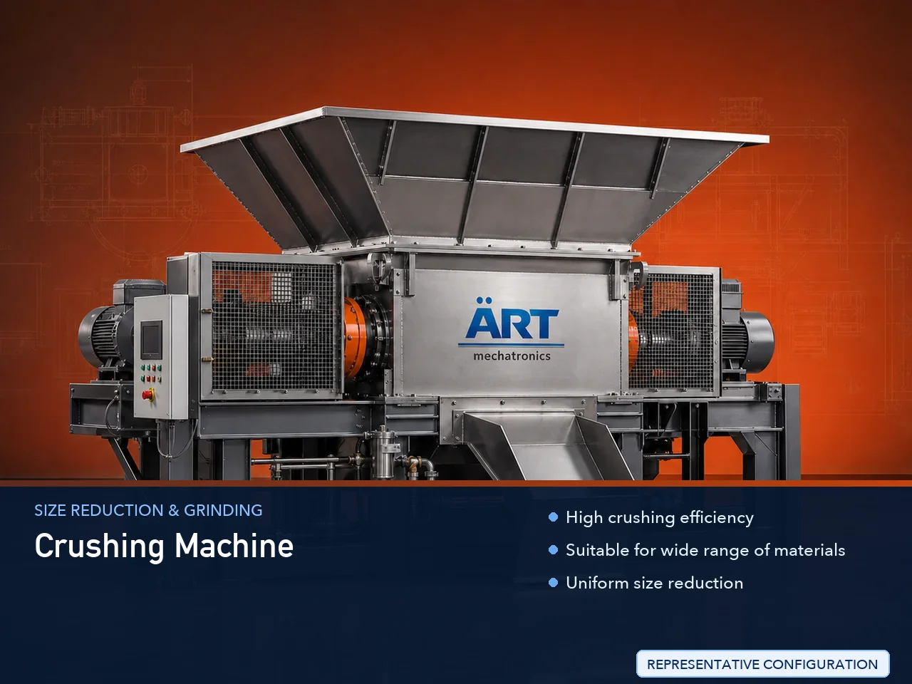

Crushing Machine (Industrial Crusher & Material Size Reduction System)
A Crushing Machine, also known as an Industrial Crusher Machine, is a heavy-duty equipment used for breaking down large materials into smaller, manageable sizes for further processing.

About the Crushing Machine
Crushing machines are widely used across industries such as mineral processing, food processing, agro industries, chemicals, recycling, construction, and material handling, where raw materials must be reduced before grinding or processing.
These machines operate using various mechanisms such as impact, compression, and shear, ensuring efficient size reduction, high throughput, and uniform output.
ART Mechatronics offers a wide range of industrial crushing machines, engineered for high performance, durability, and continuous operation in demanding environments.
One machine, many names
Buyers search for this equipment under many terms — we manufacture all of them:
Working Principle of Crushing Machine
Raw material is fed into the crusher via:
Depending on machine type:
Material is broken into smaller pieces
Processed material is discharged for:
Types of Crushing Machines
Industries Using Crushing Machines
🏗️ Mineral & Construction Industry
- Stone, limestone, gypsum
- Cement plants
🌾 Agro & Food Industry
- Grains
- Pulses
- Spices
⚗️ Chemical Industry
- Chemicals
- Raw material processing
♻️ Recycling Industry
- Plastic
- Waste materials
🏭 Industrial Manufacturing
- Raw material preparation
🌿 Biomass Industry
- Wood
- Agro waste
Features & Advantages
✔ High crushing efficiency ✔ Suitable for wide range of materials ✔ Uniform size reduction ✔ Heavy-duty and durable construction ✔ Low maintenance operation ✔ Energy-efficient performance ✔ Continuous industrial operation
Technical Highlights
- Capacity: Custom (kg/hr to tons/hr)
- Crushing Type: Impact / Compression / Shear
- Construction: Mild Steel / Heavy-duty steel
- Output Size: Adjustable
- Drive: Electric motor
- Integration: Can be linked with grinding systems
Turnkey Crushing Solutions
ART Mechatronics offers:
- Complete crushing system design
- Machine selection based on material
- Integration with grinding and conveying systems
- Installation & commissioning
- After-sales service & AMC
Why Choose Art Mechatronics
- Expertise in industrial size reduction systems
- Customized solutions for different materials
- High-performance and robust machines
- Reliable operation in heavy-duty conditions
- Proven performance across industries
Applications
- Mineral Processing Plants
- Food Processing Units
- Agro Processing Plants
- Chemical Plants
- Recycling Units
Industries that use the Crushing Machine
Related Size Reduction & Grinding machines
Get pricing & specs for the Crushing Machine
Share the product, target capacity, current process and plant location. These details help our engineers discuss the right machine or line configuration.
One partner, from design to start-up
ART Mechatronics designs, manufactures, installs and commissions your Crushing Machine solution with regional presence in India, UAE and Thailand.